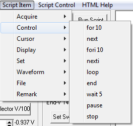

for n Starts a loop with
n-iterations where
n is the integer following the
for statement.
For 10 will loop ten times.
next Marks the end of the code loop embodied by the
for statement.
Example:
rem for loop example with ten iterations of a runsweep command
for 10
runsweep
next
Starts a loop with
n-iterations where
n is the integer following the
fori statement.
nexti Marks the end of the code loop embodied by the
fori statement
loop Starts the begining of an infinite loop.
end Marks the end of the code for the
loop statement.
wait n Waits for
n-script cycles before continuing. The integer
n following
wait
is the number of delay cycles. The cyle length is dependent on the
script control step time. It can be set to 10ms, 100ms or 1s.
Wait 5 will delay 50ms, 500ms or 5s.
pause Stops execution of the script program. Execution continues by clicking the
Run Script button or un-checked the
Pause menu item under Script Control. To indicate a required operation, a comment can be added after the
pause command. e.g.
pause Install next part then click Run Script
stop Stops execution of the script program and resets the script pointer to the first line of text.
Script Item
Main